Boundary Logic with Credit Data: Loan-Default Prediction
Boundary_Logic_loan_default_workflow.RmdOverview
This vignette walks through the complete three-phase Boundary Logic
workflow on a credit-risk problem: predicting loan
default from a dataset of 45,000 loan applications with a binary
loan_status outcome (1 = default, 0 = repaid). It closes
with a section that places Boundary Logic’s interpretation side
by side with SHAP for the very same model.
The loan dataset exercises features that the simple iris example does not:
-
A non-linear, tree-based model — an XGBoost
classifier, wrapped via
bl_wrap_model(). - Domain filtering — the credit-risk question is posed for the sub-population of applicants with no prior default on file.
- Feature pruning driven by Phase 2 — the global distance-to-boundary importance is used to drop weak variables and refit a leaner model.
- Business-motivated actionability constraints — some variables (interest rate, credit score) move in defined directions; others (age) are fixed.
- External-applicant analysis — scoring and explaining a brand new application not in the training data.
The workflow follows three phases:
- Phase 1: Data preparation, model fitting, CVA biplot construction.
- Phase 2: Global interpretation — distance to boundary, per-variable importance, surrogate model, and feature pruning.
- Phase 3: Local interpretation of a single applicant — local counterfactual, Shapley attribution, sparse counterfactual.
- Comparison with SHAP: global and local SHAP for the same XGBoost model, contrasted with the Boundary Logic output.
Setup
library(boundarylogic)
library(dplyr)
#>
#> Attaching package: 'dplyr'
#> The following objects are masked from 'package:stats':
#>
#> filter, lag
#> The following objects are masked from 'package:base':
#>
#> intersect, setdiff, setequal, unionThe final section also uses fastshap and
shapviz. They are optional (Suggests); if
they are not installed the SHAP chunks are skipped automatically.
Phase 1: Build the pipeline
Step 1 — Load and encode
The raw dataset ships with the package in inst/extdata.
It mixes numeric and categorical columns, so the categorical variables
are integer-encoded first. Three high-cardinality categoricals
(loan_intent, person_education,
person_home_ownership) are dropped to keep the biplot
legible.
loan_raw <- read.csv(
system.file("extdata", "loan_data.csv", package = "boundarylogic")
)
loan_encoded <- loan_raw
gender_map <- c(female = 0, male = 1)
ownership_map <- c("MORTGAGE" = 0, "OTHER" = 1, "OWN" = 2, "RENT" = 3)
intent_map <- c("DEBTCONSOLIDATION" = 0, "EDUCATION" = 1,
"HOMEIMPROVEMENT" = 2, "MEDICAL" = 3,
"PERSONAL" = 4, "VENTURE" = 5)
education_map <- c("High School" = 0, "Associate" = 1,
"Bachelor" = 2, "Master" = 3, "Doctorate" = 4)
defaults_map <- c("No" = 0, "Yes" = 1)
loan_encoded$person_gender <- gender_map[loan_encoded$person_gender]
loan_encoded$person_education <- education_map[loan_encoded$person_education]
loan_encoded$person_home_ownership <- ownership_map[loan_encoded$person_home_ownership]
loan_encoded$loan_intent <- intent_map[loan_encoded$loan_intent]
loan_encoded$previous_loan_defaults_on_file <- defaults_map[loan_encoded$previous_loan_defaults_on_file]
# Coerce all columns to double so the training data and the prediction grid
# share the same type (read.csv() reads integer-valued columns as integer,
# but the grid builder generates sequences as double).
loan_encoded[] <- lapply(loan_encoded, as.numeric)
# Drop high-cardinality categoricals
vars_to_remove <- c("loan_intent", "person_education", "person_home_ownership")
loan_encoded <- loan_encoded[, setdiff(names(loan_encoded), vars_to_remove),
drop = FALSE]
names(loan_encoded)
#> [1] "person_age" "person_gender"
#> [3] "person_income" "person_emp_exp"
#> [5] "loan_amnt" "loan_int_rate"
#> [7] "loan_percent_income" "cb_person_cred_hist_length"
#> [9] "credit_score" "previous_loan_defaults_on_file"
#> [11] "loan_status"Vignette note: to keep build time short, the steps below draw a seeded random subsample of the data. The full 45,000-row dataset is shipped in
inst/extdata/loan_data.csv— re-run with the complete data for production analysis.
Step 2 — Exploratory biplot (no model)
A PCA biplot coloured by loan_status — built
before any model — shows the class structure and the
variable loading directions. Passing no bl_model to
bl_build_result() returns a projection-only object that
plot_biplotEZ() renders in the usual style.
set.seed(121L)
loan_explore <- loan_encoded[sample(nrow(loan_encoded), 4000L), ]
bl_dat_exp <- bl_prepare_data(
data = loan_explore,
class_col = "loan_status",
train_fraction = 1,
seed = 121L,
hull_fraction = 1
)
#> Hull fraction: 1.00 | Retained: 4000 (100.0%) | Removed: 0 (0.0%)
bl_proj <- bl_build_result(
bl_data = bl_dat_exp,
method = "PCA",
title = "Loan default - exploratory PCA biplot"
)
#> Note: 'bl_model' is NULL. Returning a model-free bl_result. plot_biplotEZ() will show the biplot coloured by true class only. No prediction grid or decision boundary will be available.
#> No test data found (train_fraction = 1?). bl_result$test_data set to train_data for downstream compatibility.
plot_biplotEZ(
bl_proj,
label_dir = "Paral",
label_offset_var = c("person_age", "person_gender", "person_income",
"person_emp_exp", "loan_amnt", "loan_int_rate",
"loan_percent_income", "cb_person_cred_hist_length",
"credit_score", "previous_loan_defaults_on_file"),
label_offset_dist = c(0, 0, 0.5, 1, 0.5, 1, 0, 1.5, 0, 0)
)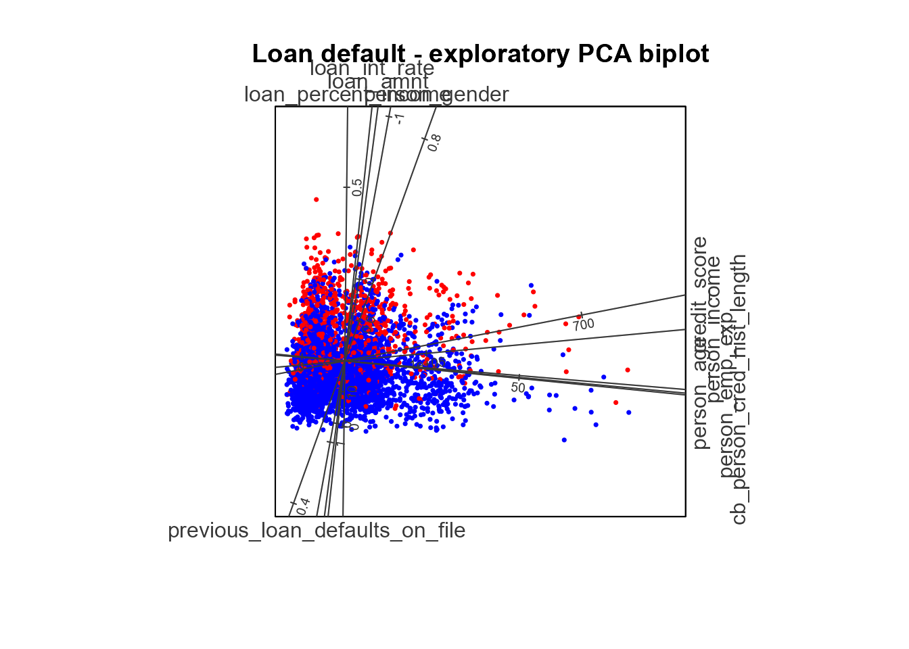
#>
#> --- Class summary (no model) ---
#> Points plotted : 4000
#> Class 1 : 909 (22.7 %)
#> Class 0 : 3091 (77.3 %)
#> --------------------------------Step 3 — Domain filter
The credit-risk model targets applicants with no prior
default on file. After filtering,
previous_loan_defaults_on_file is constant and is excluded
from the feature set (zero variance). The modelling population is then
subsampled to 4,000 rows for a fast build.
loan_filtered <- loan_encoded[loan_encoded$previous_loan_defaults_on_file == 0, ]
set.seed(121L)
loan_filtered <- loan_filtered[sample(nrow(loan_filtered), 4000L), ]
feature_cols <- setdiff(
names(loan_filtered),
c("loan_status", "previous_loan_defaults_on_file")
)
cat("Rows:", nrow(loan_filtered), "\n")
#> Rows: 4000
cat("Features:", paste(feature_cols, collapse = ", "), "\n")
#> Features: person_age, person_gender, person_income, person_emp_exp, loan_amnt, loan_int_rate, loan_percent_income, cb_person_cred_hist_length, credit_scoreSteps 4-6 — Prepare data, fit XGBoost, build the biplot
bl_prepare_data() makes a reproducible 80/20 split,
encodes the class, and trims the outermost 10% of training points
(hull_fraction = 0.9). An XGBoost classifier is then fitted
directly and registered with bl_wrap_model() using the
built-in "XGB" dispatch — the model must be supplied as
list(model = <booster>, features = <character vector>).
bl_dat <- bl_prepare_data(
data = loan_filtered,
class_col = "loan_status",
feature_cols = feature_cols,
train_fraction = 0.8,
seed = 121L,
hull_fraction = 0.9
)
#> Hull fraction: 0.90 | Retained: 2887 (90.2%) | Removed: 313 (9.8%)
xgb_data <- xgboost::xgb.DMatrix(
data = as.matrix(bl_dat$train_data[, bl_dat$var_names]),
label = bl_dat$train_data$class
)
xgb_fit <- xgboost::xgb.train(
params = list(objective = "binary:logistic",
eval_metric = "logloss",
max_depth = 3,
learning_rate = 0.1),
data = xgb_data,
nrounds = 200,
verbose = 0
)
bl_mod <- bl_wrap_model(
model = list(model = xgb_fit, features = bl_dat$var_names),
model_type = "XGB",
var_names = bl_dat$var_names,
train_data = bl_dat$train_data
)
bl_results <- bl_build_result(
bl_data = bl_dat,
bl_model = bl_mod,
method = "CVA",
title = "Loan default (no prior default) - XGB, CVA biplot",
b_margin = 0.001
)
print(bl_results)
#> <bl_result>
#> Model type : XGB
#> Method : CVA
#> Features : 9 (person_age, person_gender, person_income, person_emp_exp, loan_amnt, loan_int_rate, loan_percent_income, cb_person_cred_hist_length, credit_score)
#> Train rows : 2887 | Test rows: 800
#> Cutoff : 0.5
#> Accuracy : 0.8573 | Gini: 0.8618
#> Grid size : 200 x 200
#> Hull fraction: 1.00
#> Created : 2026-06-08 16:03:55CVA projection is the default for this workflow: it maximises between-class separation in the 2D plane, making the decision boundary clearly visible.
plot_biplotEZ(
bl_results,
label_dir = "Hor",
label_offset_var = 0L,
label_offset_dist = 0.5
)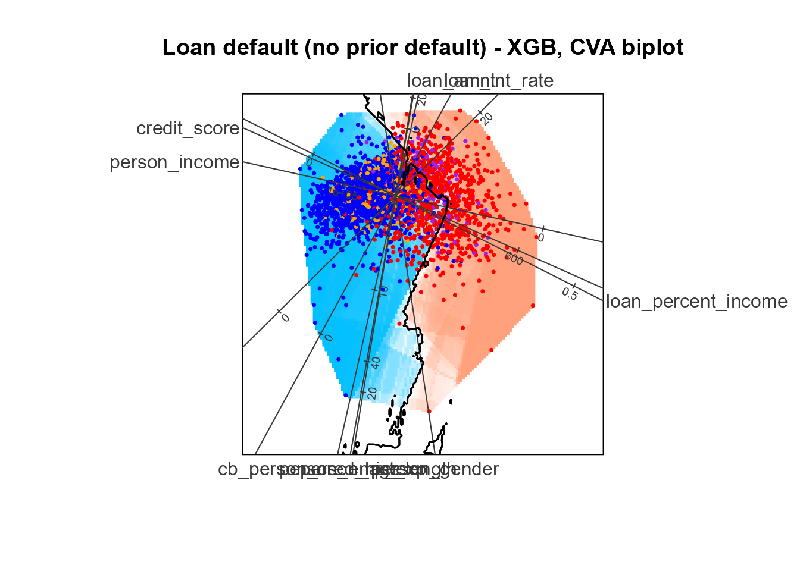
#>
#> --- Prediction summary ---
#> Points plotted : 2887
#> Predicted 1 : 1192 (41.3 %)
#> Predicted 0 : 1695 (58.7 %)
#> Accuracy : 2475 / 2887 (85.7 %)
#> TP / TN / FP / FN : 1032 / 1443 / 160 / 252
#> --------------------------Overlay the test observations (filter_to_polygon = TRUE
drops points that project outside the training hull):
test_pts <- bl_project_points(bl_results$test_data, bl_results,
filter_to_polygon = TRUE)
plot(bl_results, points = test_pts)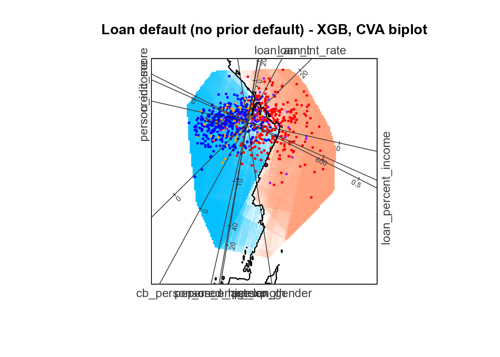
#>
#> --- Prediction summary ---
#> Points plotted : 796
#> Predicted 1 : 327 (41.1 %)
#> Predicted 0 : 469 (58.9 %)
#> Accuracy : 667 / 796 (83.8 %)
#> TP / TN / FP / FN : 281 / 386 / 46 / 83
#> --------------------------Phase 2: Global interpretation
Step 7 — Find nearest boundary point:
bl_find_boundary()
bl_find_boundary() finds, for every observation, the
nearest point on the decision boundary and back-projects it to feature
space. The search is constrained to the training feature envelope
(train_ranges).
bl_bnd <- bl_find_boundary(bl_results)
#> bl_find_boundary(): 9 identified counterfactual(s) are outside the training feature ranges, but are retained.
print(bl_bnd)
#> <bl_boundary>
#> Observations : 800
#> Boundaries used: 6
#> Dist Z (mean) : 0.0215
#> Dist X (mean) : 2.8615
#> B_pred range : [0.1220, 0.7720]
plot_biplotEZ(bl_results, points = test_pts)
#>
#> --- Prediction summary ---
#> Points plotted : 796
#> Predicted 1 : 327 (41.1 %)
#> Predicted 0 : 469 (58.9 %)
#> Accuracy : 667 / 796 (83.8 %)
#> TP / TN / FP / FN : 281 / 386 / 46 / 83
#> --------------------------
# Interactive: click an observation to see its counterfactual arrow
bl_pick_point(bl_results, bl_boundary = bl_bnd)Step 8 — Distance-to-boundary plot
plot(bl_bnd) decomposes each observation’s distance to
the boundary into a signed, standardised contribution per variable,
sorted from least to most important.
-
Y-axis:
variable : total absolute standardised distance. - X-axis: signed standardised distance.
- Colours: TP = red, TN = blue, FP = purple, FN = orange.
plot(bl_bnd)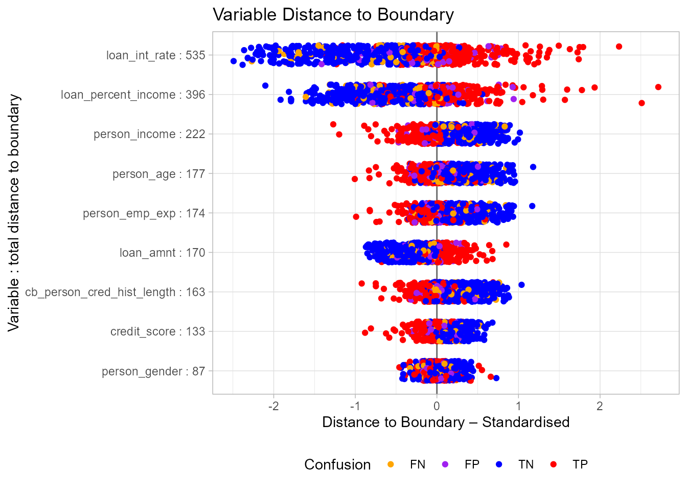
#>
#> Distance metric: mahalanobis
#> Robustness (total distance): 2055.21
#>
#> Per-variable totals (descending):
#> loan_int_rate loan_percent_income
#> 534.63 396.30
#> person_income person_age
#> 221.52 176.54
#> person_emp_exp loan_amnt
#> 173.72 170.38
#> cb_person_cred_hist_length credit_score
#> 162.78 132.82
#> person_gender
#> 86.52
#>
#> Mahalanobis decomposition (sum across obs):
#> diagonal = 3931.62 | cross-correlation = -2211.86 (-128.6% of total d_M^2)
#> Note: |cross-correlation| >= 25%% -- the diagonal approximation
#> is meaningfully lossy for this data. See implementation_summary.txt
#> Section 4.6.1 for theoretical alternatives.
plot(bl_bnd, type = "boxplot")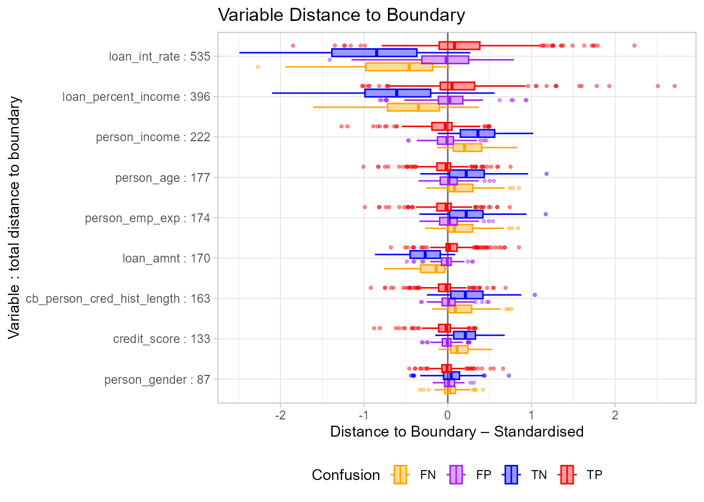
#>
#> Distance metric: mahalanobis
#> Robustness (total distance): 2055.21
#>
#> Per-variable totals (descending):
#> loan_int_rate loan_percent_income
#> 534.63 396.30
#> person_income person_age
#> 221.52 176.54
#> person_emp_exp loan_amnt
#> 173.72 170.38
#> cb_person_cred_hist_length credit_score
#> 162.78 132.82
#> person_gender
#> 86.52
#>
#> Mahalanobis decomposition (sum across obs):
#> diagonal = 3931.62 | cross-correlation = -2211.86 (-128.6% of total d_M^2)
#> Note: |cross-correlation| >= 25%% -- the diagonal approximation
#> is meaningfully lossy for this data. See implementation_summary.txt
#> Section 4.6.1 for theoretical alternatives.Step 9 — Surrogate model: bl_surrogate()
bl_surrogate() classifies each training observation
purely from its position relative to the surrogate contour lines in
Z-space, giving a spatial approximation of the classifier confined to
the training hull.
bl_surr <- bl_surrogate(bl_results)
print(bl_surr)
#> <bl_surrogate>
#> Observations : 2887
#> Surrogate regions : 20
#> Accuracy vs model : 0.7904 (in-hull: 2887 / 2887 = 100%)
#> Accuracy vs labels : 0.7115
plot(bl_surr)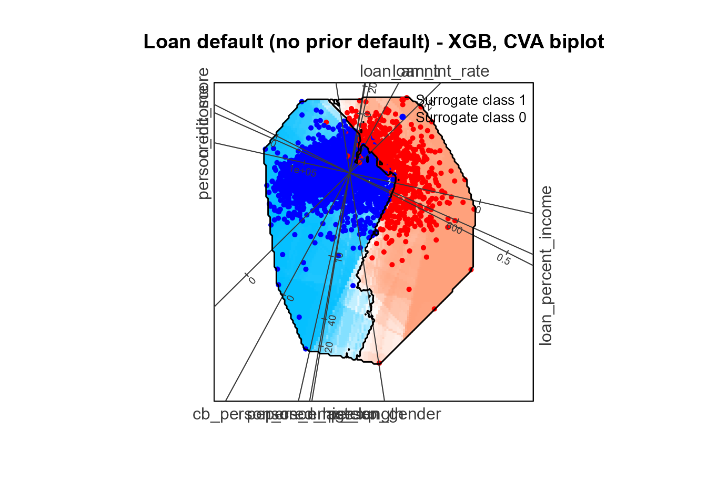
#> Surrogate accuracy vs model : 0.7904
#> Surrogate accuracy vs labels: 0.7115Step 10 — Prune weak variables and refit
The per-variable totals from bl_find_boundary() act as a
global importance ranking. bl_robustness() exposes them
programmatically as sum_of_distance. The weakest variables
are dropped and the model is refit on the leaner feature set.
rob <- bl_robustness(bl_bnd)
var_imp <- sort(rob$sum_of_distance) # ascending: weakest first
print(round(var_imp, 2))
#> person_gender credit_score
#> 86.52 132.82
#> cb_person_cred_hist_length loan_amnt
#> 162.78 170.38
#> person_emp_exp person_age
#> 173.72 176.54
#> person_income loan_percent_income
#> 221.52 396.30
#> loan_int_rate
#> 534.63
# Drop the four weakest variables; keep the five strongest.
vars_to_drop <- c("person_gender", "person_emp_exp",
"cb_person_cred_hist_length", "person_income")
feature_cols_v2 <- setdiff(bl_dat$var_names, vars_to_drop)
cat("Retained features:", paste(feature_cols_v2, collapse = ", "), "\n")
#> Retained features: person_age, loan_amnt, loan_int_rate, loan_percent_income, credit_scoreRefit the whole pipeline on the reduced feature set:
bl_dat_v2 <- bl_prepare_data(
data = loan_filtered,
class_col = "loan_status",
feature_cols = feature_cols_v2,
train_fraction = 0.8,
seed = 121L,
hull_fraction = 0.9
)
#> Hull fraction: 0.90 | Retained: 2883 (90.1%) | Removed: 317 (9.9%)
xgb_data_v2 <- xgboost::xgb.DMatrix(
data = as.matrix(bl_dat_v2$train_data[, bl_dat_v2$var_names]),
label = bl_dat_v2$train_data$class
)
xgb_fit_v2 <- xgboost::xgb.train(
params = list(objective = "binary:logistic",
eval_metric = "logloss",
max_depth = 3,
learning_rate = 0.1),
data = xgb_data_v2,
nrounds = 200,
verbose = 0
)
bl_mod_v2 <- bl_wrap_model(
model = list(model = xgb_fit_v2, features = bl_dat_v2$var_names),
model_type = "XGB",
var_names = bl_dat_v2$var_names,
train_data = bl_dat_v2$train_data
)
bl_results_v2 <- bl_build_result(
bl_data = bl_dat_v2,
bl_model = bl_mod_v2,
method = "CVA",
title = "Loan default - XGB, reduced features, CVA biplot",
b_margin = 0.01
)
plot_biplotEZ(bl_results_v2)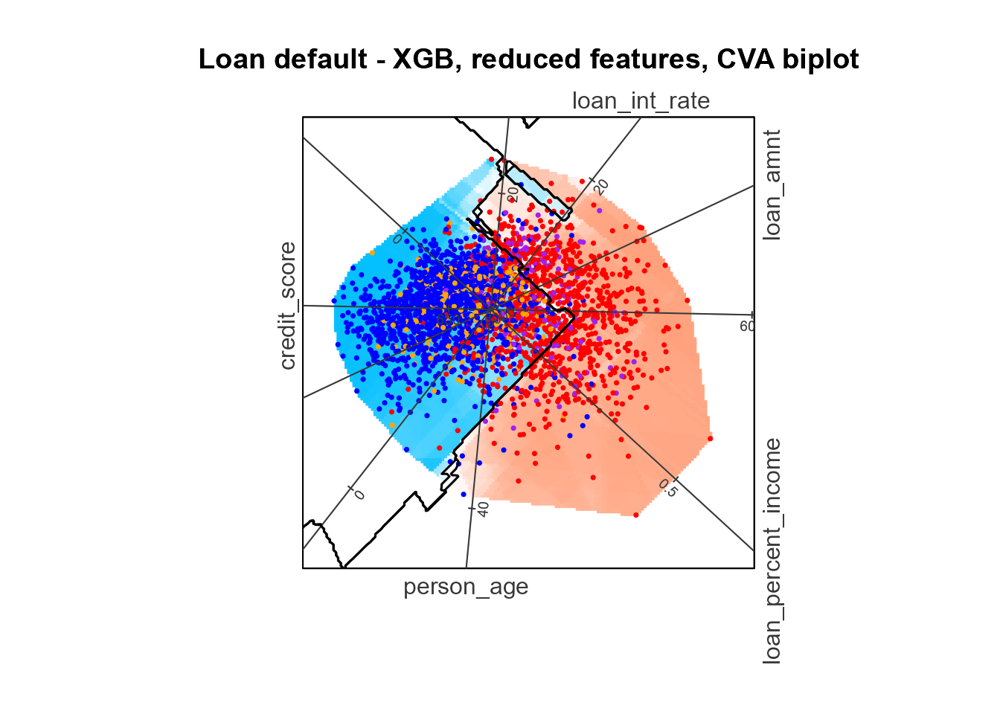
#>
#> --- Prediction summary ---
#> Points plotted : 2883
#> Predicted 1 : 1181 (41.0 %)
#> Predicted 0 : 1702 (59.0 %)
#> Accuracy : 2422 / 2883 (84.0 %)
#> TP / TN / FP / FN : 1001 / 1421 / 180 / 281
#> --------------------------
test_pts_v2 <- bl_project_points(bl_results_v2$test_data, bl_results_v2)
plot(bl_results_v2, points = test_pts_v2)#>
#> --- Prediction summary ---
#> Points plotted : 800
#> Predicted 1 : 317 (39.6 %)
#> Predicted 0 : 483 (60.4 %)
#> Accuracy : 652 / 800 (81.5 %)
#> TP / TN / FP / FN : 268 / 384 / 49 / 99
#> --------------------------Re-inspect the reduced model globally:
bl_bnd_v2 <- bl_find_boundary(bl_results_v2)
#> bl_find_boundary(): 9 identified counterfactual(s) are outside the training feature ranges, but are retained.
plot(bl_bnd_v2)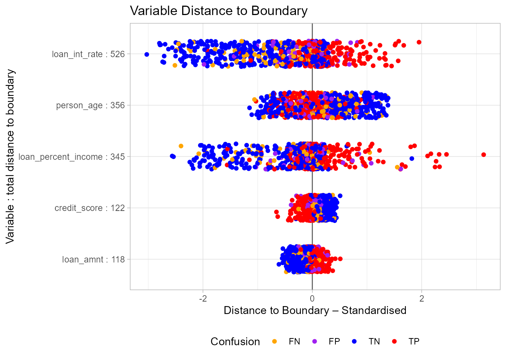
#>
#> Distance metric: mahalanobis
#> Robustness (total distance): 1467.66
#>
#> Per-variable totals (descending):
#> loan_int_rate person_age loan_percent_income credit_score
#> 526.07 356.16 345.36 121.58
#> loan_amnt
#> 118.50
#>
#> Mahalanobis decomposition (sum across obs):
#> diagonal = 1866.52 | cross-correlation = -45.00 (-2.5% of total d_M^2)
bl_surr_v2 <- bl_surrogate(bl_results_v2)
plot(bl_surr_v2,
label_dir = "Paral",
label_offset_var = c("person_age", "loan_amnt", "loan_int_rate",
"loan_percent_income", "credit_score"),
label_offset_dist = c(0, 0, 0.5, 0, 0),
ticks_v = 5)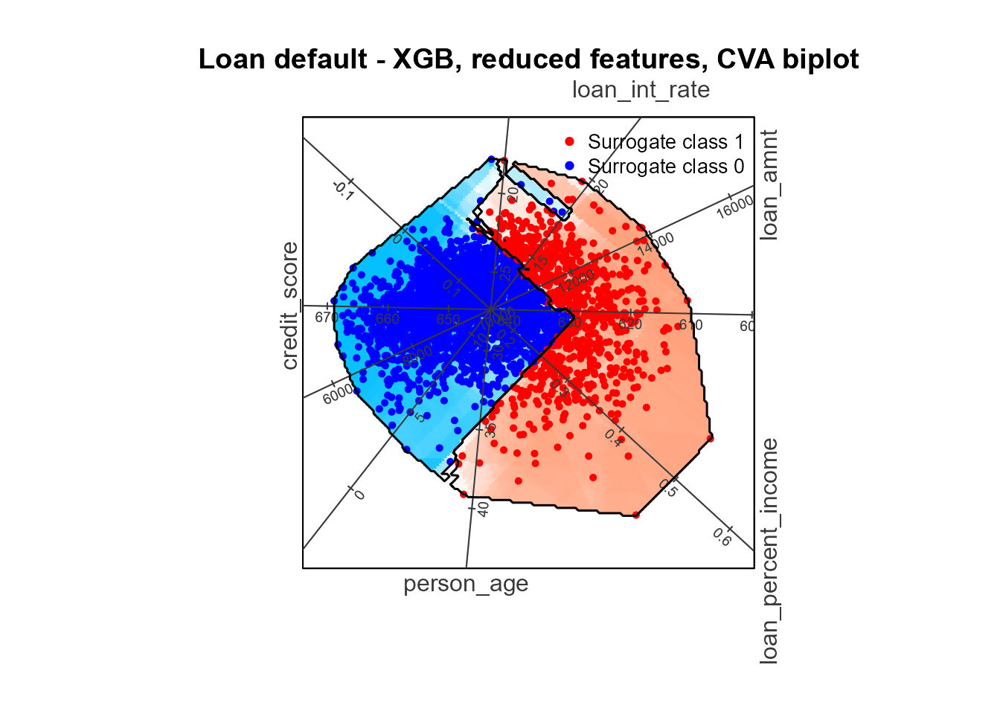
#> Surrogate accuracy vs model : 0.8356
#> Surrogate accuracy vs labels: 0.7333Phase 3: Local interpretation
All of Phase 3 uses the reduced model bl_results_v2.
Step 11 — Inspect predictions and select a target
bl_predict() scores every test observation.
False Negatives (true class 1, predicted 0) are the
most actionable: the applicant will default but the model clears them —
what would have to change to flag them correctly?
pred_summary <- bl_predict(bl_results_v2)
# Pick the first false-negative applicant; fall back to the first true
# defaulter so the vignette knits regardless of the data split.
fn_idx <- which(pred_summary$true_class == 1 & pred_summary$pred_class == 0)
tdp <- if (length(fn_idx) > 0) fn_idx[1] else which(pred_summary$true_class == 1)[1]
pred_summary[tdp, ]
#> row pred_prob pred_class true_class confusion person_age loan_amnt
#> 2 2 0.496 0 1 FN 39 1500
#> loan_int_rate loan_percent_income credit_score
#> 2 14.22 0.05 666
tgt <- bl_select_target(bl_results_v2, target = tdp)
print(tgt)
#> -- bl_target --
#> Row ID : 2
#> Predicted prob : 0.4960
#> Predicted class: 0
#> Feature values :
#> person_age loan_amnt loan_int_rate loan_percent_income
#> 39.00 1500.00 14.22 0.05
#> credit_score
#> 666.00
plot(
bl_results_v2,
points = test_pts_v2,
target_point = bl_results_v2$test_data[tdp, ],
target_label = tdp,
label_dir = "Paral",
label_offset_var = c("person_age", "loan_amnt", "loan_int_rate",
"loan_percent_income", "credit_score"),
label_offset_dist = c(0, 0, 0.5, 0, 0),
ticks_v = 3
)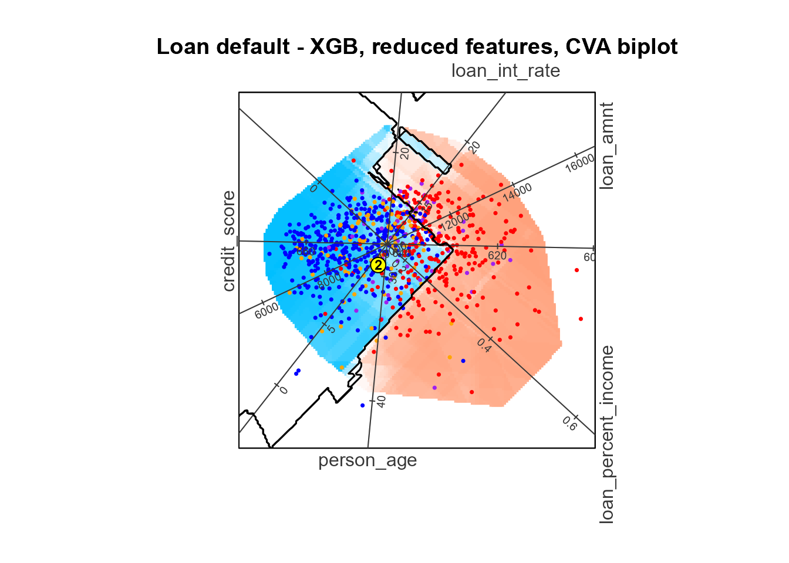
#>
#> --- Prediction summary ---
#> Points plotted : 800
#> Predicted 1 : 317 (39.6 %)
#> Predicted 0 : 483 (60.4 %)
#> Accuracy : 652 / 800 (81.5 %)
#> TP / TN / FP / FN : 268 / 384 / 49 / 99
#> --------------------------Step 12 — Set actionability constraints:
set_filters()
Not every variable can move freely in a lending decision.
set_filters() encodes the business constraints:
-
"decrease"— counterfactual value must be ≤ observed. -
"increase"— counterfactual value must be ≥ observed. -
"fixed"— not actionable; the search allows ±0.5 of observed and the sparse counterfactual always reverts it. -
c(min, max)— counterfactual must lie within this absolute range.
Here person_age is fixed (not actionable), while
loan_int_rate and credit_score are constrained
to increase. Only variables still in the reduced model may be named.
flt <- set_filters(
tgt,
person_age = "fixed", # not actionable
loan_int_rate = "increase", # set by the lender, not the applicant
credit_score = "increase"
)
print(flt)
#> -- bl_filters --
#> person_age : fixed
#> loan_int_rate : increase
#> credit_score : increaseStep 13 — Find local counterfactual:
bl_find_local_cf()
bl_find_local_cf() rotates the biplot around the target,
builds a local prediction grid, applies train_ranges and
the actionability filters, and finds the nearest opposing-class boundary
point — repeating across eigenvector pairs and keeping the closest.
bl_local <- bl_find_local_cf(
bl_result = bl_results_v2,
bl_target = tgt,
set_filters = flt
)
#> Pair 1/10: eigenvectors (1, 2) ...
#> All segments eliminated by constraints.
#> Pair 2/10: eigenvectors (1, 3) ...
#> Distance: 0.0035 Z | 0.1880 Mahalanobis (sqrt)
#> Pair 3/10: eigenvectors (2, 3) ...
#> All segments eliminated by constraints.
#> Pair 4/10: eigenvectors (1, 4) ...
#> All segments eliminated by constraints.
#> Pair 5/10: eigenvectors (2, 4) ...
#> All segments eliminated by constraints.
#> Pair 6/10: eigenvectors (3, 4) ...
#> All segments eliminated by constraints.
#> Pair 7/10: eigenvectors (1, 5) ...
#> All segments eliminated by constraints.
#> Pair 8/10: eigenvectors (2, 5) ...
#> All segments eliminated by constraints.
#> Pair 9/10: eigenvectors (3, 5) ...
#> All segments eliminated by constraints.
#> Pair 10/10: eigenvectors (4, 5) ...
#> All segments eliminated by constraints.
#> Best pair: (1, 3) | Selector: Mahalanobis (sqrt) = 0.1880 | Z = 0.0035
print(bl_local)
#> -- bl_local_result --
#> Solution found : TRUE
#> Best pair : (1, 3)
#> Selector : mahalanobis
#> Distance (Z) : 0.0035
#> Mahalanobis : 0.1880 (sqrt of squared d_M^2 = 0.0354)
#> Boundary pred : 0.5560
#>
#> Target:
#> -- bl_target --
#> Row ID : 2
#> Predicted prob : 0.4960
#> Predicted class: 0
#> Feature values :
#> person_age loan_amnt loan_int_rate loan_percent_income
#> 39.00 1500.00 14.22 0.05
#> credit_score
#> 666.00
#>
#> Per-pair distances:
#> pair dist_z dist_mahalanobis
#> (1,2) NA NA
#> (1,3) 0.003504141 0.03535126
#> (2,3) NA NA
#> (1,4) NA NA
#> (2,4) NA NA
#> (3,4) NA NA
#> (1,5) NA NA
#> (2,5) NA NA
#> (3,5) NA NA
#> (4,5) NA NAStep 14 — Local biplot
plot(bl_local) renders the rotated eigenvector plane
that minimises the distance to the boundary, showing the target (filled
circle) and the counterfactual (grey cross with arrow).
plot(bl_local,
label_dir = "Paral",
label_offset_var = c("person_age", "loan_amnt", "loan_int_rate",
"loan_percent_income", "credit_score"),
label_offset_dist = c(0, 0.5, 0, 0, 0),
ticks_var = c("person_age", "loan_amnt", "loan_int_rate",
"loan_percent_income", "credit_score"),
ticks_n = c(2, 4, 200, 200, 20))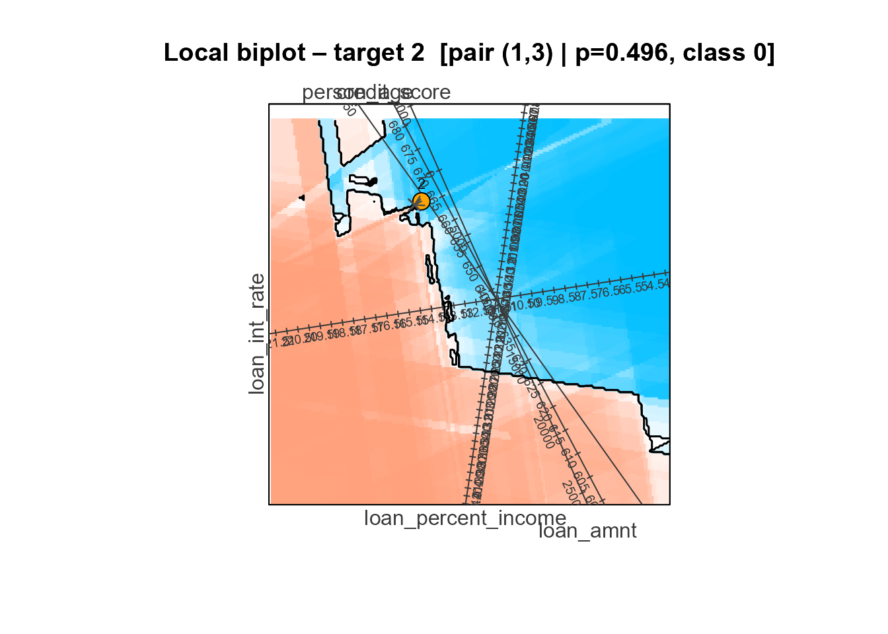
#>
#> --- Local CF summary ---
#> Target : 2
#> Pred prob : 0.4960 (class 0)
#> Best pair : (1, 3)
#> Selector : mahalanobis
#> Distance (Z) : 0.0035
#> Mahalanobis : 0.1880 (sqrt)
#> Boundary pred : 0.5560
#> ------------------------Step 15 — Shapley attribution: bl_shapley()
bl_shapley() decomposes the path from the target to the
counterfactual into per-variable contributions. Each variable is
classified as Supports (helps cross the boundary) or
Contradicts (works against it). Y-axis labels read
variable: observed_value -> required_change.
bl_shapley_values <- bl_shapley(bl_local)
print(bl_shapley_values)
#> -- bl_shapley --
#> Row ID : 2
#> Pred prob : 0.4960
#> Pred class : 0
#> Boundary pred : 0.5560
#>
#> Shapley table:
#> varnames pred_data data_to_boundary shapley_cause Contribute
#> person_age 39.00 0.1076 0.00 Supports
#> loan_amnt 1500.00 30.0639 0.00 Supports
#> loan_percent_income 0.05 0.0058 0.00 Supports
#> credit_score 666.00 0.0186 0.00 Supports
#> loan_int_rate 14.22 0.3311 0.06 Supports
plot(bl_shapley_values)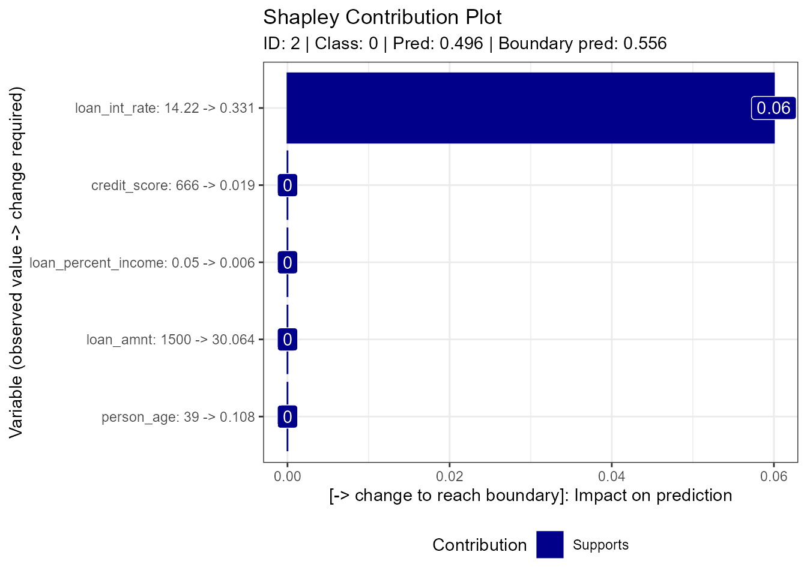
Step 16 — Sparse counterfactual:
bl_find_sparse_cf()
bl_find_sparse_cf() reverts every
Contradicts variable (and every "fixed"
variable) to its observed value, so only the Supports
variables change. solution_valid = TRUE confirms the sparse
change still flips the prediction.
bl_sparse <- bl_find_sparse_cf(bl_shapley_values, round_to = NULL)
print(bl_sparse)
#> -- bl_sparse_result --
#> Solution valid : TRUE
#>
#> Predictions:
#> Observed : 0.4960 (class 0)
#> Full CF : 0.5560
#> Sparse CF : 0.5560
#>
#> Variable summary:
#> variable x_obs B_x x_sparse used_in_sparse
#> person_age 39.00 39.1076 39.0000 TRUE
#> loan_amnt 1500.00 1530.0639 1530.0639 TRUE
#> loan_percent_income 0.05 0.0558 0.0558 TRUE
#> credit_score 666.00 666.0186 666.0186 TRUE
#> loan_int_rate 14.22 14.5511 14.5511 TRUE
plot(bl_sparse)#>
#> --- Sparse CF summary ---
#> Target : 2
#> Observed pred : 0.4960 (class 0)
#> Full CF pred : 0.5560
#> Sparse CF pred : 0.5560
#> Solution valid : TRUE
#> -------------------------Alternative: unconstrained local search
Running bl_find_local_cf() without actionability
constraints gives the geometrically nearest boundary point — a useful
baseline.
bl_local_free <- bl_find_local_cf(bl_results_v2, tgt)
#> Pair 1/10: eigenvectors (1, 2) ...
#> Distance: 0.0028 Z | 0.1487 Mahalanobis (sqrt)
#> Pair 2/10: eigenvectors (1, 3) ...
#> Distance: 0.0026 Z | 0.1378 Mahalanobis (sqrt)
#> Pair 3/10: eigenvectors (2, 3) ...
#> Distance: 0.0033 Z | 0.1790 Mahalanobis (sqrt)
#> Pair 4/10: eigenvectors (1, 4) ...
#> Distance: 0.0036 Z | 0.1938 Mahalanobis (sqrt)
#> Pair 5/10: eigenvectors (2, 4) ...
#> Distance: 0.0035 Z | 0.1876 Mahalanobis (sqrt)
#> Pair 6/10: eigenvectors (3, 4) ...
#> Distance: 0.0038 Z | 0.2061 Mahalanobis (sqrt)
#> Pair 7/10: eigenvectors (1, 5) ...
#> Distance: 0.0027 Z | 0.1427 Mahalanobis (sqrt)
#> Pair 8/10: eigenvectors (2, 5) ...
#> Distance: 0.0046 Z | 0.2482 Mahalanobis (sqrt)
#> Pair 9/10: eigenvectors (3, 5) ...
#> Distance: 0.0037 Z | 0.1989 Mahalanobis (sqrt)
#> Pair 10/10: eigenvectors (4, 5) ...
#> Distance: 0.0043 Z | 0.2283 Mahalanobis (sqrt)
#> Best pair: (1, 3) | Selector: Mahalanobis (sqrt) = 0.1378 | Z = 0.0026
plot(bl_local_free,
label_dir = "Paral",
label_offset_var = c("person_age", "loan_amnt", "loan_int_rate",
"loan_percent_income", "credit_score"),
label_offset_dist = c(0, 0, 0, 0, 1),
ticks_var = c("person_age", "loan_amnt", "loan_int_rate",
"loan_percent_income", "credit_score"),
ticks_n = c(2, 4, 200, 200, 20))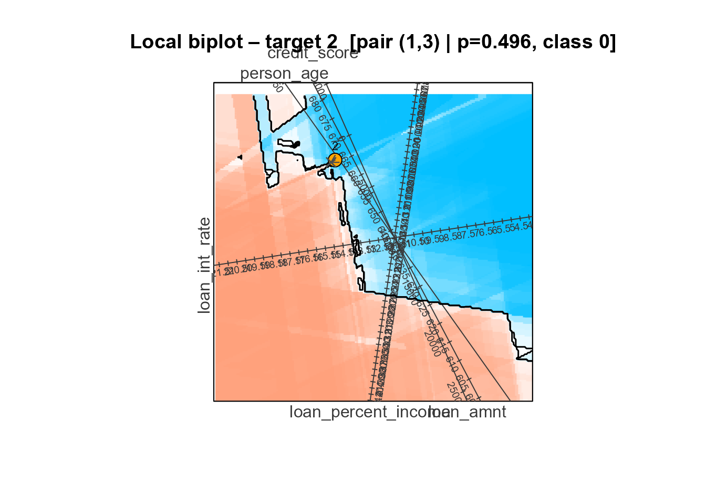
#>
#> --- Local CF summary ---
#> Target : 2
#> Pred prob : 0.4960 (class 0)
#> Best pair : (1, 3)
#> Selector : mahalanobis
#> Distance (Z) : 0.0026
#> Mahalanobis : 0.1378 (sqrt)
#> Boundary pred : 0.6930
#> ------------------------
bl_shap_free <- bl_shapley(bl_local_free)
bl_sparse_free <- bl_find_sparse_cf(bl_shap_free, round_to = NULL)
plot(bl_shap_free)
plot(bl_sparse_free)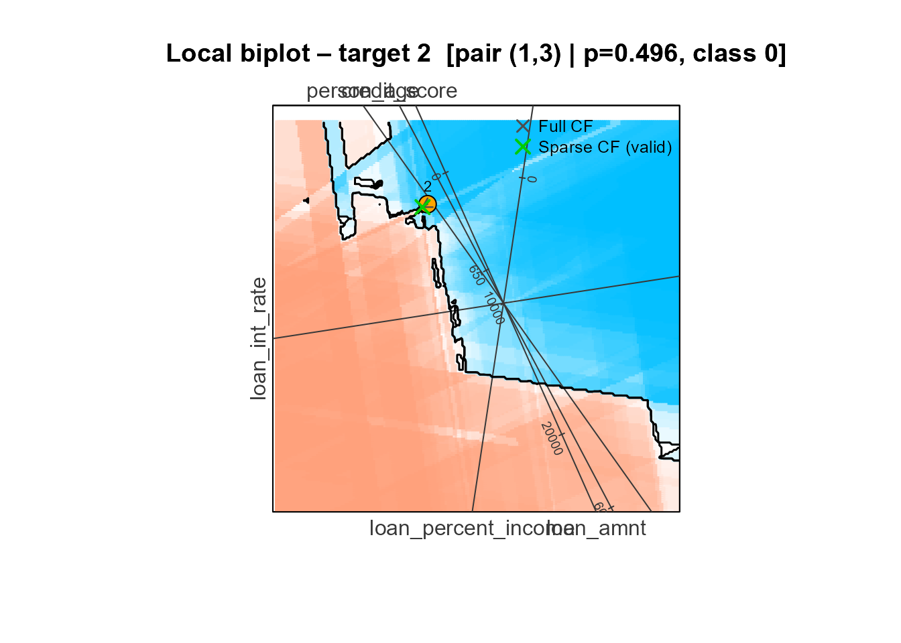
#>
#> --- Sparse CF summary ---
#> Target : 2
#> Observed pred : 0.4960 (class 0)
#> Full CF pred : 0.6930
#> Sparse CF pred : 0.6930
#> Solution valid : TRUE
#> -------------------------External applicant
Phase 3 is not limited to the train/test set. Pass a single-row data
frame as the target to score and explain a new application.
Only the retained features are needed.
new_applicant <- data.frame(
person_age = 32,
loan_amnt = 12000,
loan_int_rate = 13.5,
loan_percent_income = 12000 / 248000,
credit_score = 420
)
new_applicant <- new_applicant[, intersect(names(new_applicant), feature_cols_v2),
drop = FALSE]
plot_biplotEZ(
bl_results_v2,
points = test_pts_v2,
target_point = new_applicant,
target_label = "new"
)#>
#> --- Prediction summary ---
#> Points plotted : 800
#> Predicted 1 : 317 (39.6 %)
#> Predicted 0 : 483 (60.4 %)
#> Accuracy : 652 / 800 (81.5 %)
#> TP / TN / FP / FN : 268 / 384 / 49 / 99
#> --------------------------
tgt_ext <- bl_select_target(bl_results_v2, target = new_applicant)
bl_local_ext <- bl_find_local_cf(bl_results_v2, tgt_ext)
#> Pair 1/10: eigenvectors (1, 2) ...
#> Distance: 0.0193 Z | 1.0363 Mahalanobis (sqrt)
#> Pair 2/10: eigenvectors (1, 3) ...
#> Distance: 0.0299 Z | 1.6059 Mahalanobis (sqrt)
#> Pair 3/10: eigenvectors (2, 3) ...
#> Distance: 0.0192 Z | 1.0306 Mahalanobis (sqrt)
#> Pair 4/10: eigenvectors (1, 4) ...
#> Distance: 0.0191 Z | 1.0269 Mahalanobis (sqrt)
#> Pair 5/10: eigenvectors (2, 4) ...
#> Distance: 0.0246 Z | 1.3183 Mahalanobis (sqrt)
#> Pair 6/10: eigenvectors (3, 4) ...
#> Distance: 0.0253 Z | 1.3559 Mahalanobis (sqrt)
#> Pair 7/10: eigenvectors (1, 5) ...
#> Distance: 0.0198 Z | 1.0636 Mahalanobis (sqrt)
#> Pair 8/10: eigenvectors (2, 5) ...
#> Distance: 0.0260 Z | 1.3947 Mahalanobis (sqrt)
#> Pair 9/10: eigenvectors (3, 5) ...
#> Distance: 0.0184 Z | 0.9889 Mahalanobis (sqrt)
#> Pair 10/10: eigenvectors (4, 5) ...
#> Distance: 0.0209 Z | 1.1224 Mahalanobis (sqrt)
#> Best pair: (3, 5) | Selector: Mahalanobis (sqrt) = 0.9889 | Z = 0.0184
bl_shap_ext <- bl_shapley(bl_local_ext)
bl_sparse_ext <- bl_find_sparse_cf(bl_shap_ext)
plot(bl_local_ext)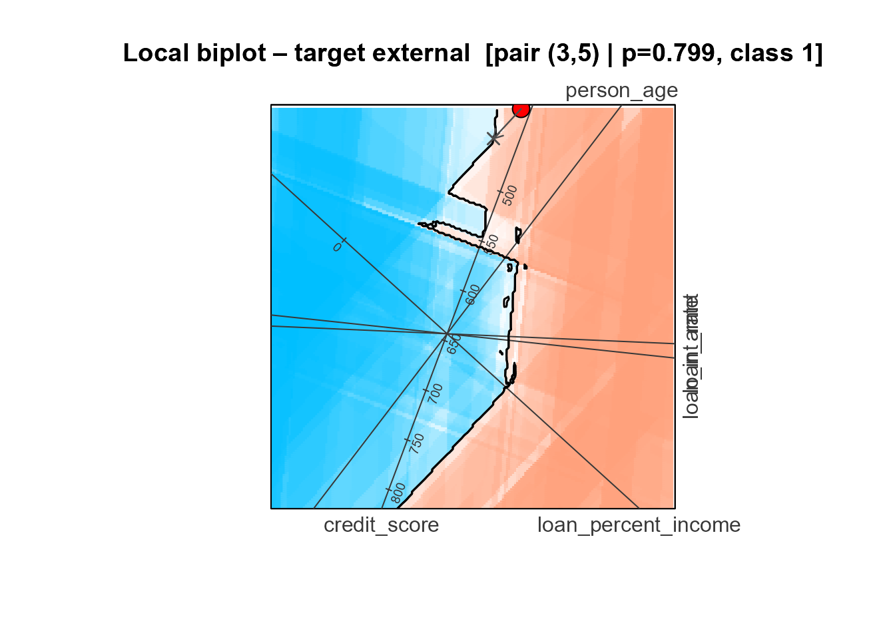
#>
#> --- Local CF summary ---
#> Target : external
#> Pred prob : 0.7990 (class 1)
#> Best pair : (3, 5)
#> Selector : mahalanobis
#> Distance (Z) : 0.0184
#> Mahalanobis : 0.9889 (sqrt)
#> Boundary pred : 0.3990
#> ------------------------
plot(bl_shap_ext)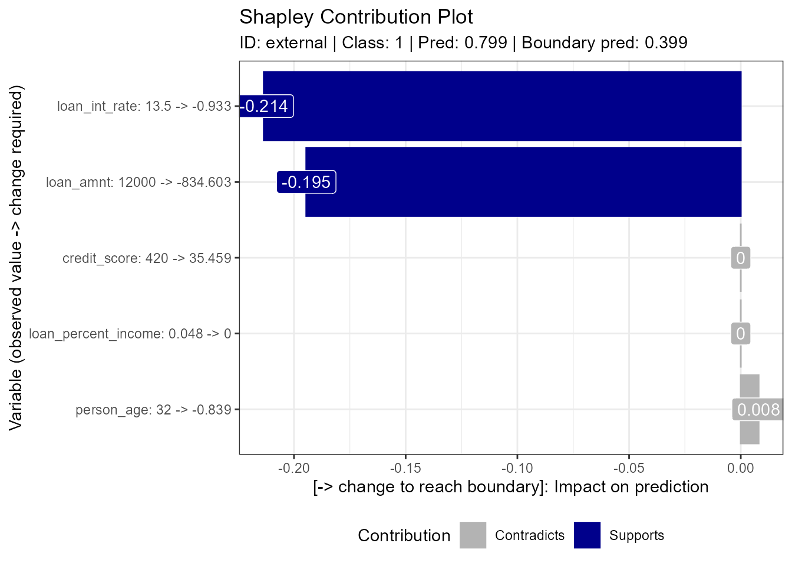
plot(bl_sparse_ext)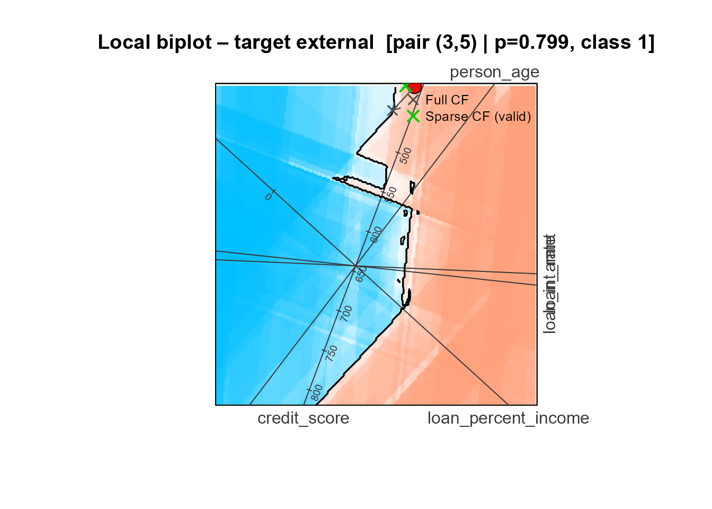
#>
#> --- Sparse CF summary ---
#> Target : external
#> Observed pred : 0.7990 (class 1)
#> Full CF pred : 0.3990
#> Sparse CF pred : 0.3900
#> Solution valid : TRUE
#> -------------------------Comparison with SHAP
SHAP (SHapley Additive exPlanations) is the most widely used post-hoc attribution method, so it is the natural yardstick for Boundary Logic. Both rest on Shapley values, but they answer different questions:
- SHAP attributes the model’s predicted probability for an observation, relative to the average (baseline) prediction over the training data. It says why the score is what it is.
- Boundary Logic attributes distance to the decision boundary (globally) and the minimal change that flips the prediction (locally). It says what would have to change to alter the decision.
The chunks below fit real SHAP on the same XGBoost
models using fastshap and shapviz.
Each chunk is guarded with if (has_shap), so the section
renders only when both packages are installed (and the vignette still
builds when they are not).
if (has_shap) {
# fastshap needs a prediction wrapper f(object, newdata) -> numeric vector.
# For XGBoost the new data must be wrapped in an xgb.DMatrix.
pred_fn <- function(object, newdata) {
as.numeric(predict(object, xgboost::xgb.DMatrix(as.matrix(newdata))))
}
# Background / explanation data for each model
X_train_full <- bl_dat$train_data[, bl_dat$var_names, drop = FALSE]
X_train_v2 <- bl_dat_v2$train_data[, bl_dat_v2$var_names, drop = FALSE]
X_test_v2 <- bl_dat_v2$test_data[, bl_dat_v2$var_names, drop = FALSE]
# SHAP baseline = mean predicted probability over the (reduced-model)
# training background. fastshap does not attach one, so shapviz needs it.
shap_baseline <- mean(pred_fn(xgb_fit_v2, X_train_v2))
}Global: SHAP vs. Boundary Logic variable selection
(a) Which five variables would SHAP have kept?
In Phase 2 the distance-to-boundary importance picked the
five variables in feature_cols_v2. Here we ask SHAP the
same question on the full nine-feature model: rank the
variables by mean absolute SHAP value and take its top five.
if (has_shap) {
set.seed(42L)
shap_full <- fastshap::explain(
object = xgb_fit, # full-feature model
X = X_train_full,
pred_wrapper = pred_fn,
nsim = 50L
)
shap_imp <- sort(colMeans(abs(as.matrix(shap_full))), decreasing = TRUE)
shap_top5 <- names(shap_imp)[1:5]
# Distance-to-boundary ranking (strongest first) from Phase 2
dist_top5 <- names(sort(rob$sum_of_distance, decreasing = TRUE))[1:5]
print(data.frame(
rank = 1:5,
SHAP = shap_top5,
dist_to_bound = dist_top5
))
}
#> rank SHAP dist_to_bound
#> 1 1 loan_int_rate loan_int_rate
#> 2 2 loan_percent_income loan_percent_income
#> 3 3 person_income person_income
#> 4 4 credit_score person_age
#> 5 5 loan_amnt person_emp_expThe two criteria usually agree on the dominant credit-risk drivers (interest rate, loan-to-income, credit score) but can disagree in the tail: SHAP ranks a variable by how much it moves the predicted probability away from the average applicant, whereas Boundary Logic ranks it by its total standardised contribution to distance from the decision boundary. A variable can shift many scores a little (high SHAP) yet rarely be the lever that carries a point across the boundary (low distance contribution), and vice versa.
(b) Global SHAP of the retained five variables
Now run SHAP on the reduced model — exactly the five variables the workflow proceeded with — and view the standard global summaries.
if (has_shap) {
set.seed(42L)
shap_v2 <- fastshap::explain(
object = xgb_fit_v2, # reduced model
X = X_train_v2,
pred_wrapper = pred_fn,
nsim = 50L
)
sv_v2 <- shapviz::shapviz(as.matrix(shap_v2), X = X_train_v2,
baseline = shap_baseline)
print(shapviz::sv_importance(sv_v2, kind = "bar") +
ggplot2::labs(title = "Global SHAP importance - reduced XGB model"))
}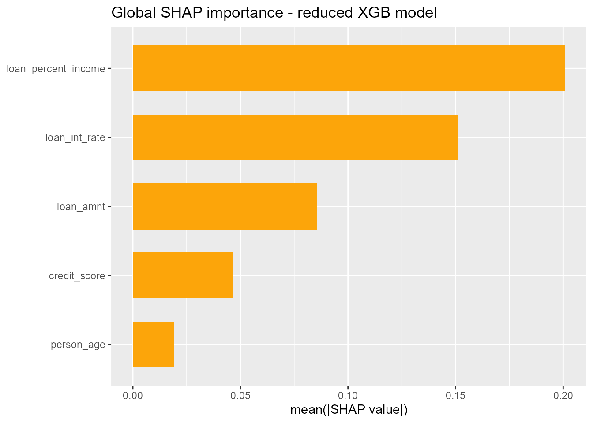
if (has_shap) {
print(shapviz::sv_importance(sv_v2, kind = "beeswarm") +
ggplot2::labs(title = "Global SHAP beeswarm - reduced XGB model"))
}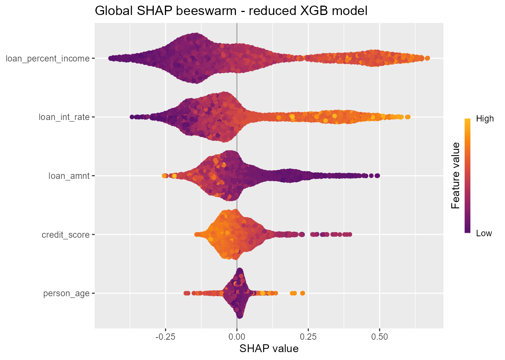
Compare these against plot(bl_bnd_v2) (Step 10) and
bl_surrogate() (Step 9). SHAP’s bar chart and the Boundary
Logic distance ranking are both global importance measures, but the SHAP
beeswarm additionally shows the direction in which high/low
feature values push the predicted probability, while the Boundary Logic
plot shows the signed distance each observation sits from the
boundary along each variable.
Local: SHAP vs. bl_shapley attribution
For the same target applicant explained in Phase 3, compute local SHAP and view the waterfall and force plots.
if (has_shap) {
set.seed(42L)
shap_local <- fastshap::explain(
object = xgb_fit_v2,
X = X_train_v2,
pred_wrapper = pred_fn,
nsim = 200L,
newdata = X_test_v2[tdp, , drop = FALSE],
adjust = TRUE # force additivity: sum(shap) = f(x) - baseline
)
sv_local <- shapviz::shapviz(as.matrix(shap_local),
X = X_test_v2[tdp, , drop = FALSE],
baseline = shap_baseline)
print(shapviz::sv_waterfall(sv_local) +
ggplot2::labs(title = sprintf("Local SHAP waterfall - applicant %d", tdp)))
}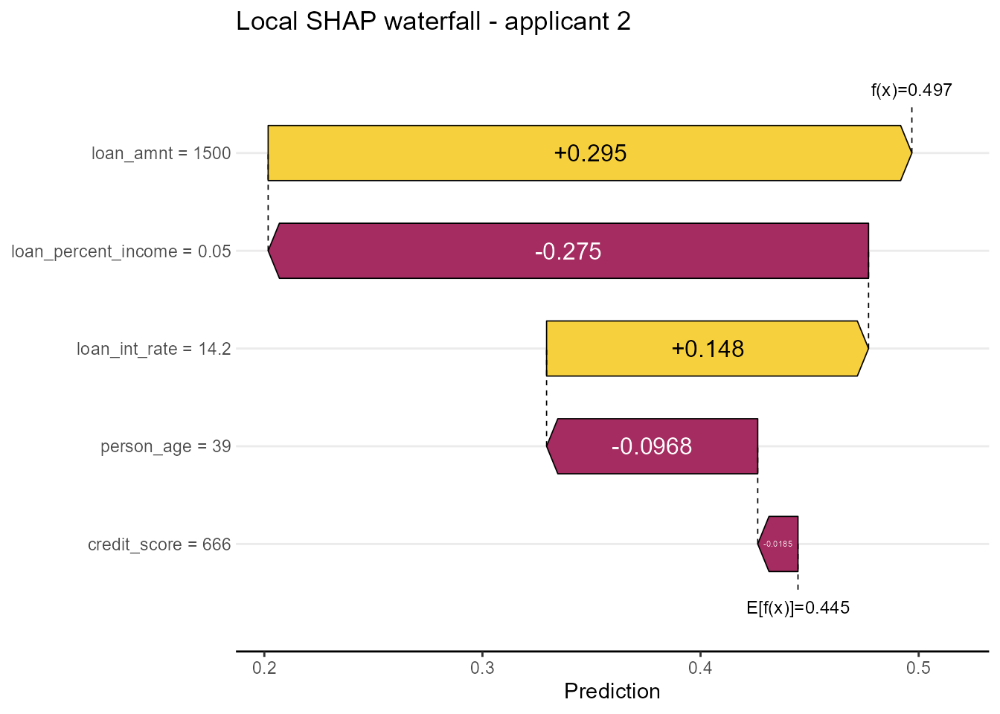
if (has_shap) {
print(shapviz::sv_force(sv_local) +
ggplot2::labs(title = sprintf("Local SHAP force plot - applicant %d", tdp)))
}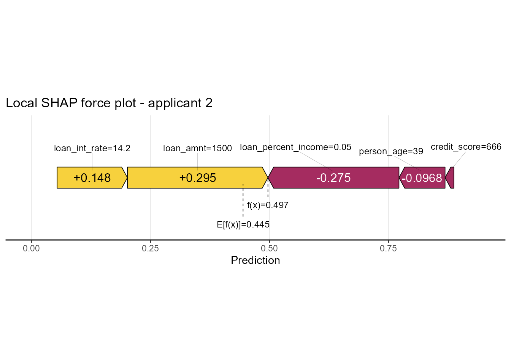
Put next to plot(bl_shapley_values) (Step 15), the
contrast is sharp:
| Aspect | Local SHAP (waterfall/force) | bl_shapley() |
|---|---|---|
| What it explains | The predicted probability for this applicant | The path from this applicant to the boundary counterfactual |
| Baseline | Mean training prediction | The applicant’s observed feature values |
| Reading | Each bar pushes the score up/down | Each bar Supports or Contradicts crossing the boundary |
| Output | A number (the score decomposition) | An actionable change (observed -> required) |
| Constraints | None | Honours set_filters() actionability |
SHAP tells you why the model scored this applicant as it
did; bl_shapley() tells you the minimal,
constraint-respecting change that would flip the decision. They
are complementary: SHAP for understanding the score, Boundary Logic for
acting on it.
Summary
| Phase | Step | Function | Purpose |
|---|---|---|---|
| 1 | 1-3 | bl_prepare_data() |
Load, encode, domain-filter, split, hull-trim |
| 1 | 2 | bl_build_result(method="PCA") |
Exploratory biplot (no model) |
| 1 | 4-6 |
bl_wrap_model() + bl_build_result()
|
XGBoost + CVA biplot |
| 2 | 7 | bl_find_boundary() |
Global counterfactual search |
| 2 | 8 | plot(bl_bnd) |
Distance-to-boundary importance |
| 2 | 9 | bl_surrogate() |
Spatial surrogate model |
| 2 | 10 | bl_robustness() |
Prune weak variables, refit |
| 3 | 11 |
bl_predict() + bl_select_target()
|
Select target applicant |
| 3 | 12 | set_filters() |
Encode actionability constraints |
| 3 | 13 | bl_find_local_cf() |
Nearest constrained counterfactual |
| 3 | 14 | plot(bl_local) |
Local biplot |
| 3 | 15 | bl_shapley() |
Shapley attribution of the flip |
| 3 | 16 | bl_find_sparse_cf() |
Sparse counterfactual |
| - | - |
fastshap / shapviz
|
SHAP comparison (global + local) |
Boundary Logic and SHAP are best used together. SHAP explains the model’s score relative to an average applicant; Boundary Logic locates each applicant relative to the decision boundary and identifies the smallest, business-feasible change that would alter the lending decision.